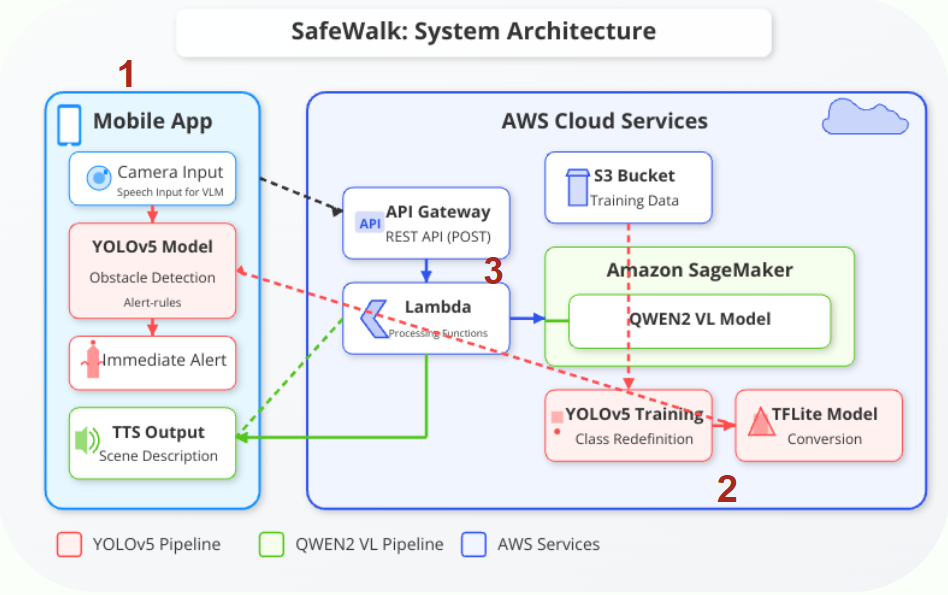

System Architecture
SafeWalk integrates mobile, vision, and language AI technologies into a seamless system that assists visually impaired individuals in real-time. Below is a breakdown of our core components.

Architecture overview: Front-end app orchestrates detection and description flows
1. Mobile Front-End
- Developed in Flutter for cross-platform capability
- Real-time video feed with overlayed obstacle detection results
- Voice-based interaction and feedback with gesture control
- Front/back camera toggle + fast alert trigger system
2. YOLOv5s Obstacle Detection
- Trained on 90,855 labeled images across 28 object classes
- Converted to TorchScript for on-device performance
- Detects and classifies objects with bounding boxes
- Provides spatial inputs for the voice alert logic
3. Qwen2 Visual Language Model (VLM)
- Cloud-hosted using AWS SageMaker + Lambda
- Receives cropped image input and returns natural language captions
- Optimized prompt engineering for environmental awareness
- Audio output is synthesized using TTS for user-friendly feedback
Deployment Strategy
- YOLOv5s: Runs on-device via TorchScript for low-latency and offline use
- Qwen2: Accessed via secure REST API for scalable and language-rich output
- Designed for modular expansion: wearable camera support, iOS app, etc.